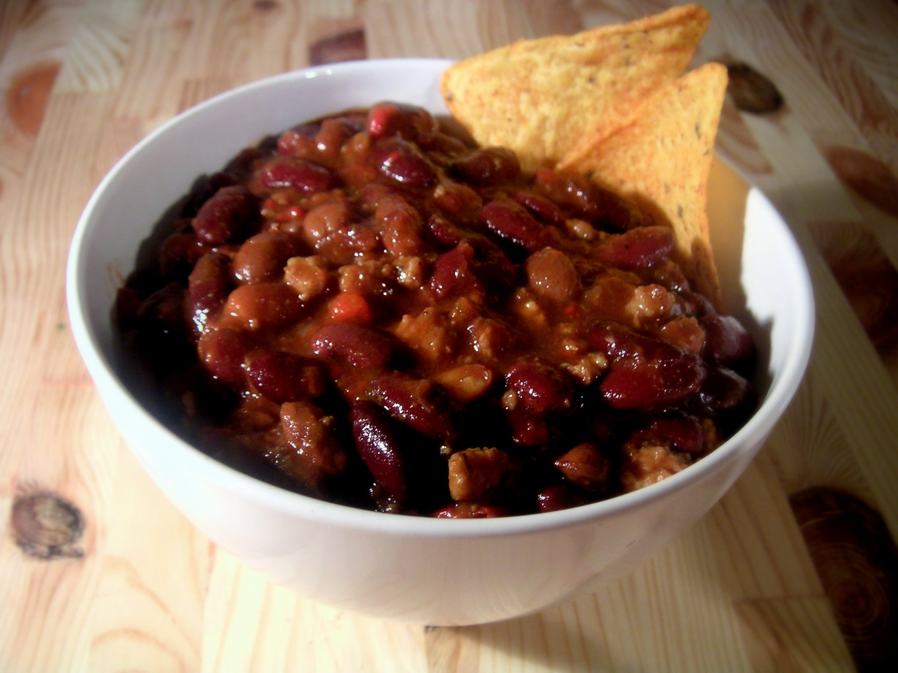

Meat and tomatoes in a sauce with beans and spices.
- 1 lb. ground beef we used 15% fat
- 1/2 medium yellow onion finely diced
- 1 poblano pepper diced
- 1 tablespoon minced garlic
- 1 15-oz. can pinto beans drained and rinsed
- 1 15-oz. can kidney beans drained and rinsed
- 1 15-oz. can tomato sauce
- 1 15-oz. can diced tomatoes
- 3 tablespoons tomato paste
- 1 tablespoon maple syrup
- 3 tablespoons chili powder
- 2 teaspoons garlic powder
- 2 teaspoons ground cumin
- 1/2 teaspoon smoked paprika
- 1/2 teaspoons salt
- 1/4 teaspoon ground pepper
- 1 cup beef broth chicken broth or water works too
- First, heat a large stockpot over medium/high heat.
- Then, add ground beef, yellow onion, and minced garlic and sauté for 7-10 minutes or until beef is fully browned.
- Next, add pinto beans, kidney beans, tomato sauce, diced tomatoes, tomato paste, and maple syrup to the pot and stir to combine.
- Add spices and 1 cup of broth and stir to combine.
- Bring beef chili to a boil, then reduce heat to low and let simmer for 10-15 minutes to thicken.